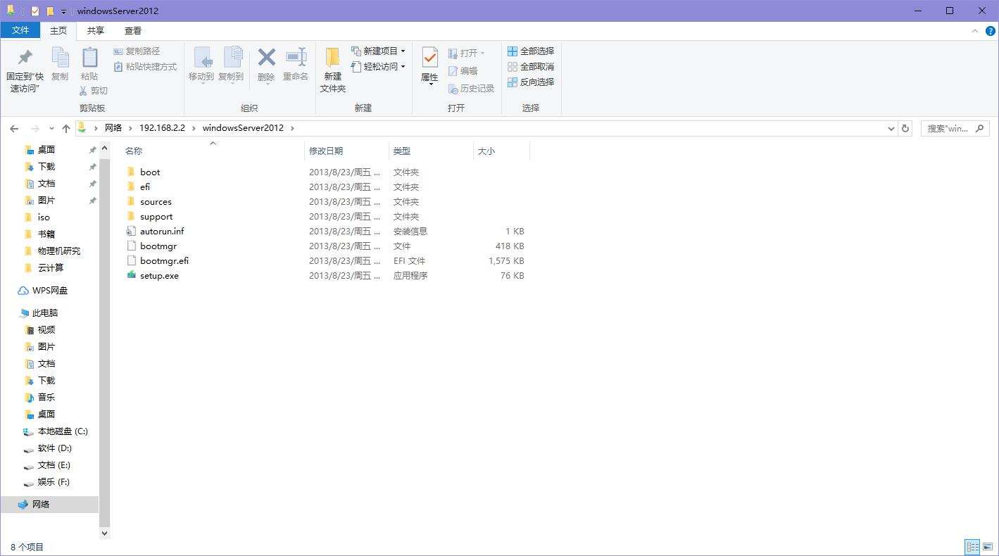
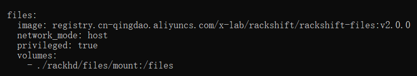
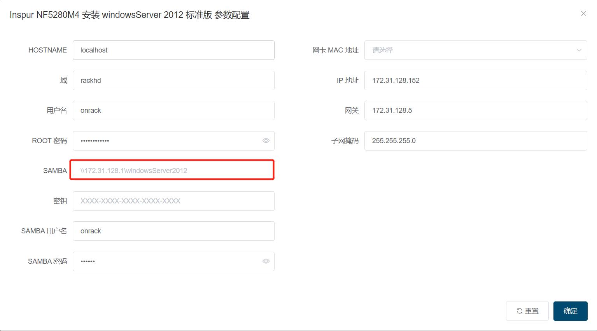

Windows Server 安装¶
部署 Samba 服务器¶
- 在 RackShift 上安装 Samba
yum install samba - 创建 Windows 镜像挂载目录
mkdir -p /opt/iso/windowsServer2012 && chmod 777 /opt/iso/windowsServer2012 - 挂载 windows 镜像（镜像下载地址）
mount windowsServer2012.iso /opt/iso/windowsServer2012 - 修改 smb.conf
vi /etc/samba/smb.conf - 输入如下内容
[windowsServer2012] path = /opt/iso/windowsServer2012 browseable = yes writeable = yes - 添加用户访问 samba 的用户
groupadd www useradd www -g www - 设置用户 www 的密码
smbpasswd -a www - 重启 samba 服务
systemctl restart smb - 从windows访问 \ip\windowsServer2012
如果不能打开请关闭 selinux 执行命令
setenforce 0 - 在弹出来的对话框输入设置的用户名和密码 www/www 
下载 winpe 镜像¶
-
修改 /opt/rackshift/docker-compose.yml files 镜像为 2.0 或者以上版本 image: registry.cn-qingdao.aliyuncs.com/x-lab/rackshift-files:v1.0.0 => image: registry.cn-qingdao.aliyuncs.com/x-lab/rackshift-files:v2.0.0 
-
rsctl reload 即可 (如果是内网机器，请先在有外网的机器上执行 docker pull registry.cn-qingdao.aliyuncs.com/x-lab/rackshift-files:v2.0.0, docker save registry.cn-qingdao.aliyuncs.com/x-lab/rackshift-files:v2.0.0 | gzip > files.tar.gz ，然后拷贝到内网机器，执行 gunzip -c files.tar.gz | docker load 加载，离线包默认不提供该镜像)
为什么？
考虑到离线包的大小太大，因此默认没有引入 WINPE
执行安装 windowsServer2012 / 2016 工作流¶
samba 地址填入 IP 加上 /etc/samba/smb.conf 配置的目录名字如 \\ip\windowsServer2012
